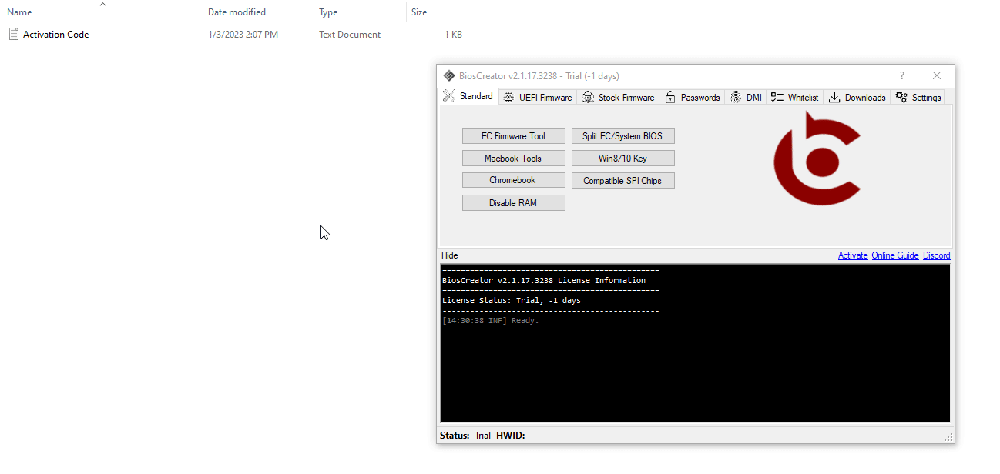

<style>
    .warning {
      background-color: #ffffcc;
      border-left: 6px solid #ffeb3b;
    }
</style>

<section class="support section bg-gray">
	<div class="container">
    <div class="container" style="text-align:justify; margin-bottom:50px;">
    <h4 class="join">Registration/Activation</h4>
    <p>To register the application, please follow these steps:</p>
    <b><p>Send your details through FB messenger at <a href="https://www.facebook.com/leakymosfet/">LeakyMosfet page.</a></p></b>
    <p><b>Order Number:</b>   LM1234</p>
    <p><b>Name: </b>          JUAN DELA CRUZ</p>
    <p><b>Company Name: </b>   LAPTOPS AND GADGETS REPAIR SHOP</p>
    <p><b>Mobile Number:</b>  09081234567</p>
    <p><b>Email Address:</b>  JUAN@gmail.com</p>
    <p><b>Hardware ID: </b>   1037-3D82-350D-4B58-51FE-35F1-9456-B18F</p>
    </div>

    <div class="container" style="text-align:justify; margin-bottom:50px;">
        <p class="warning" style="text-align:justify; margin-bottom:50px;"><strong>Note:</strong> Registration of BiosCreator v2.0 is no longer supported.</p>
        </div>

    <div class="container" style="text-align:justify; margin-bottom:50px;">
        <h4 class="join">How to Activate BiosCreator?</h4>
        <p>Once you received the activation code through your registered email, you can activate BiosCreator simply by clicking the colored blue <mark>activate</mark> link.</p>
        </div>

        <div class="container" style="text-align:justify; margin-bottom:50px;">
            
        </div>
		</div> <!-- End row -->
	</div> <!-- End container -->
</section> <!-- End section -->
        